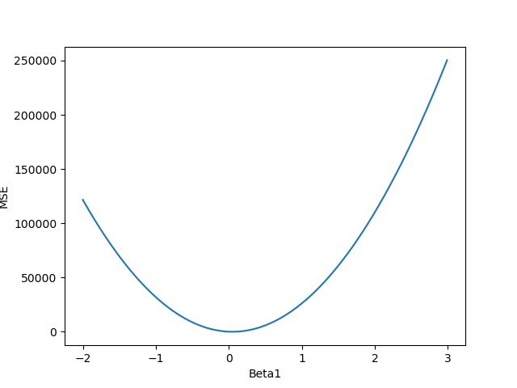

Key Word(s): Knn, Knn Regression, MSE, Data Plotting
Title :¶
Exercise: MSE for Varying Beta Values
Description :¶
The goal of this exercise is to produce a plot like the one given below.

Data Description:¶
Instructions:¶
- Fix $\beta_0 = 2.2$.
- Change $\beta_1$ in a range $[-2, 3]$.
- Estimate the fit of the model by following the steps below:
- Create empty lists to store the MSE and $\beta_1$.
- Set a range of values for $\beta_1$ and compute MSE for each one.
Hints:¶
np.linspace(start, stop, num) Return evenly spaced numbers over a specified interval.
np.arange(start, stop, increment) Return evenly spaced values within a given interval.
list_name.append(item) Add an item to the end of the list.
plt.xlabel() This is used to specify the text to be displayed as the label for the x-axis.
plt.ylabel() This is used to specify the text to be displayed as the label for the y-axis.
Note: This exercise is auto-graded, hence please remember to set all the parameters to the values mentioned in the scaffold before marking.
# Import necessary libraries
import numpy as np
import pandas as pd
import matplotlib.pyplot as plt
%matplotlib inline
Reading the dataset¶
# Read data file 'Advertising.csv' into a Pandas Dataframe
df = pd.read_csv('Advertising.csv')
# Take a quick look at the data
df.head()
# Create a new dataframe called `df_new` with the columns 'TV' and 'sales'
df_new = df[['TV', 'sales']]
Beta and MSE Computation¶
# Set beta0 to 2.2
beta0 = 2.2
# Create an empty list to store the MSE
mse_list = ___
# Create an empty list to store the beta1 values
beta1_list = ___
### edTest(test_beta) ###
# This loops runs from -2 to 3.0 with an increment of 0.1
# i.e a total of 51 steps
for beta1 in ___:
# Calculate prediction of x using beta0 and beta1
# Recall the formula y = beta0 + beta1*x
y_predict = ___
# Calculate the Mean Squared Error
mean_squared_error = ___
# Append the new MSE to the list initialized above
mse_list.___
# Append the beta1 value to the appropriate list initialized above
beta1_list.___
Plotting the graph¶
### edTest(test_mse) ###
# Helper code to plot the MSE as a function of beta1
plt.plot(beta1_list, mse_list)
plt.xlabel('Beta1')
plt.ylabel('MSE')
⏸ Go back and change your $\beta_0$ value of your choice and report your new optimal $\beta_1$ value and new lowest $MSE$. Is the MSE lower than before, or more?¶
### edTest(test_chow1) ###
# Submit an answer choice as a string below
answer1 = '___'